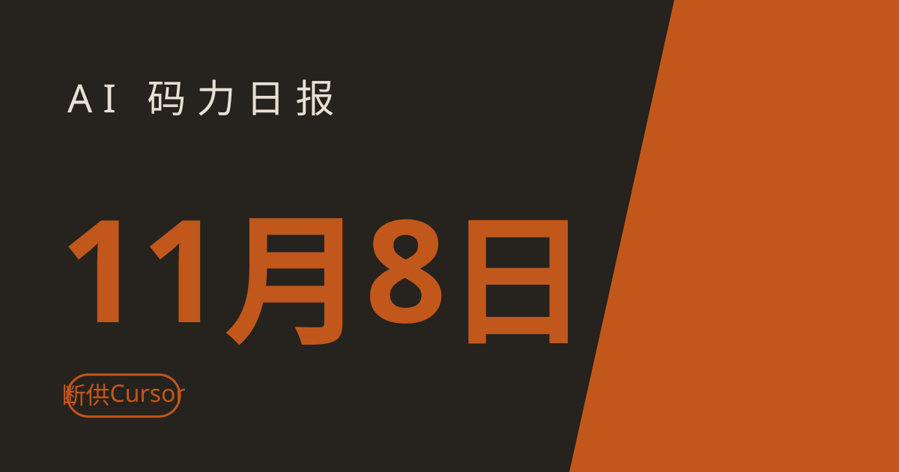

AI 码力日报 · 2026年11月8日

⚡ 一句话速览
- OpenAI 11月12日拟断供 Cursor：SpaceX 收购 Cursor 后，OpenAI 以“不信任对方遵守服务条款”为由 proposed 切断模型供应；但 OpenAI 模型只占 Cursor 用量约 5%，自带 API key 不受影响。
- Anthropic：Claude 靠“做梦”整理记忆：11 月 6 日工程博文揭秘 agent 记忆四层结构，离线“做梦” pass 对照日志纠错、建 wiki，25 道题得分从 13% 涨到 48%。
- Google：Gemini 2.5 Pro/Flash 12月1日起自动转接：调 2.5 Pro 的请求将按 Gemini 3.8 Flash 计费，2.5 Flash 转接 3.5 Flash-Lite；代码里写死 2.5 的人现在就该改。
- SuperCLUE 11月榜：Kimi K3.1 Pro 国产第一：61.46 分登顶，DeepSeek V4.1 Flash 58.95 第二；但离 Gemini 4 Argon（73.62 分）还差 12 分。
🤖 今日 AI Coding 动态
OpenAI 11月12日拟断供 Cursor：模型只占 5% 用量，慌的是另一件事
跟你有啥关系：如果你在 Cursor 里一直用 GPT 系列模型写代码，11 月 12 日之后这些选项可能直接从模型菜单里消失——现在就该把默认模型切到 Claude 或 Gemini。OpenAI 8 月 28 日发文宣布，在 SpaceX 以 600 亿美元完成收购 Cursor 母公司 Anysphere 后，将逐步终止向 Cursor 供应模型，拟定切断日为 11 月 12 日；未来模型（包括即将发布的 Astra）也不会再给 Cursor。OpenAI 给出的理由很直白：“我们无法确信 SpaceX 会在我们的服务条款内使用我们的技术”，依据是马斯克旗下公司以往违反合同的经历。影响没有看上去那么大：Cursor CEO Michael Truell 当晚回应，OpenAI 模型只占 Cursor 用户流量的约 5%，其余 95% 是 Anthropic、Google 和 Grok；Anthropic 当晚还承诺给 Cursor 增加 Claude 算力。而且这只是“提议”切断日，双方仍在谈；即使真断，自带 OpenAI API key 在 Cursor 里继续用也不受影响。我的判断：对个人用户就是换个默认模型的事；真正值得记的是这个先例——模型供应商现在会因为“你被谁收购了”直接断供，工具链上只押一家模型供应商，就是给自己埋了个定时炸弹。原文链接
Anthropic：Claude 会“做梦”整理记忆，wiki 问答得分 13% 涨到 48%
跟你有啥关系：如果你用 Claude Code 跑长期项目，最头疼的就是它“上次明明知道的事，这次又忘了”——Anthropic 11 月 6 日的工程博文《The components of agent memory》第一次系统讲了他们怎么解决这个问题，里面的做法你今天就能抄到自己的 agent 上。核心是一个叫 dreaming（做梦）的离线过程：会话之间，Claude 回读自己的日志和 transcript，对照原文纠正记错的笔记、删掉过时的、再把知识整理成互相链接的 wiki 页面。记忆分四层：原始 transcript、Claude 自己写的记忆笔记、wiki 这类结构化表征、以及每次会话都预先注入的少量关键上下文。实测数据很能打：在约 35 万份内部文件（约 4.2 亿 token）的语料上出 25 道题，只靠搜索答对 53%；wiki 经过 128 次 dreaming 慢慢长大后，单靠 wiki 从 13% 涨到 48%，搜索加 wiki 达到 61%，每题还少用约 2 万 token。CL-Bench 数据库任务上，Opus 5.5 的得分从 0.655 涨到 0.838。最生动的例子是打宝可梦：一张记错宝可梦中心的笔记让 agent 原地打转，dreaming 对照 transcript 发现错误、重写笔记才走出来。提醒一句：这篇是研究写法，不是功能上线公告；dreaming 不改模型权重，改的是存下来的上下文文件。我的判断：对自己搭 agent 的人，结论就一条——别只存原始记录，要让 agent 定期回读、纠错、整理成 wiki，记忆才越用越准。原文链接
Google：Gemini 2.5 Pro/Flash 12月1日起自动转接，写死模型名的人现在就改
跟你有啥关系：如果你在代码、agent 配置或者任何脚本里写死了 gemini-2.5-pro 或 gemini-2.5-flash，12 月 1 日之后这些请求会被 Google 自动转接到别的模型、按别的价计费——行为和账单都会变，最好现在就把模型名换掉。Gemini API changelog 11 月 2 日更新：gemini-2.5-pro 和 gemini-2.5-flash 正式弃用，Google AI Studio 里已经选不到了，2.5 Pro 的 API 访问也只留给此前活跃用户。从 12 月 1 日起，所有调 2.5 Pro 的请求自动走 gemini-3.8-flash、按 3.8 Flash 的价格计费；调 2.5 Flash 的请求自动走 gemini-3.5-flash-lite、按 Flash-Lite 计费。我的判断：Google 这次给了一个月缓冲期还算厚道，但“自动转接”等于悄悄换了你用的模型——跑分、延迟、价格全都可能变，别等 12 月 1 日看账单才发现。原文链接
SuperCLUE 11月榜：Kimi K3.1 Pro 国产第一，DeepSeek V4.1 Flash 第二
跟你有啥关系：选国产开源模型不知道看谁，SuperCLUE 的月榜是目前最像“中文高考”的标尺——11 月这期 Kimi K3.1 Pro 拿了国产第一，DeepSeek V4.1 Flash 紧随其后。SuperCLUE 11 月总榜 11 月 5 日更新：Moonshot 的 Kimi K3.1 Pro 以 61.46 分排国产第一，DeepSeek-V4.1-Flash-1017 以 58.95 分排第二；Qwen3.8-Max 43.22 分、腾讯 Hy4-Preview 42.96 分、字节 Doubao-Seed-2.1-Pro 42.06 分。榜单同时列了仅供参考的国际模型：Gemini 4 Argon 73.62 分、GPT-6.1-Sol 71.76 分、Grok 4.7 49.66 分——国产第一离 Gemini 4 Argon 还差 12 分。评测覆盖五个维度：agent 编码、数理推理、幻觉控制、指令遵循、长上下文；分差 1 分以内按并列算。横向对照 Artificial Analysis 智能指数：Kimi K3.1 Pro 46 分、DeepSeek V4.1 Flash 33 分。我的判断：Kimi 这次赢在 agent 编码和长上下文两项，正好是编程 agent 最吃香的能力；但别只看总分，幻觉控制那项 DeepSeek 只有 43.89 分，写代码时还是得多留个心眼。原文链接
Thinking Machines Inkling 2 Small：594B 参数，智能指数 31，跑分还不到 Kimi 一半价
跟你有啥关系：Mira Murati 的 Thinking Machines Lab 出了第二代模型，想试新模型的人又多了一个便宜选择——每百万 token 输入 $0.30、输出 $1.00，比同档便宜不少。Inkling 2 Small 11 月 5 日发布：594B 参数的 MoE，每 token 只激活 17B，原生支持图片输入、可变推理力度、1M 上下文；Artificial Analysis 智能指数 31 分，比 7 月的第一代 Inkling 进步一大截。目前只能在它家 Tinker 平台上用 API 和 Playground，权重还是闭源的，官方说下周外部安全测试做完后以 Apache 2.0 开源。跑分横向比较：AA 指数 31 分，低于 Kimi K3.1 Pro 的 46 分；但第三方测算显示它跑一个基准任务约 $1.18、18.5 分钟，对比 Kimi 的 $3.68、36.3 分钟——便宜一半还快一倍。我的判断：指数 31 分说明它还不是第一梯队，但这个价配这个速度，拿来跑批量任务、做实验很划算；等下周权重真开源了，本地部署的玩家再跟进也不迟。原文链接
📱 AI 应用新品
Grok 也有记忆了：记住你聊过的事，回复越来越像“认识你”
是什么：xAI 11 月 6 日开始给 Grok 推记忆功能，跟 ChatGPT 和 Gemini 的记忆一个路子——记住你对话里的细节，下次聊天时拿来个性化回复、给更贴身的建议。解决什么问题：以前每次打开 Grok 都像第一次见面，偏好、背景、做过的事全得重说一遍；有了记忆，对话能接着上文走。免费额度/价格：Grok 应用内的功能更新，没单独标价（截至撰写时）。适合谁：天天用 Grok 聊天、希望它越用越懂你的人；提醒一句：记忆类功能记得去设置里看一眼，哪些能记、哪些能删，自己说了算。原文链接
Meta Muse Voice 全美上线：跟你的 AI 助手视频通话，头像还会跟着说话做表情
是什么：Meta 11 月 5 日把 Muse Voice 推给全美用户：在 Muse 应用里实时语音对话，配一个会动的表情 avatar——你说话它就听、它说话时头像跟着做表情和手势，还能随时打断它。解决什么问题：文字聊天来回打字太慢，语音助手又只有声音没有“人味”；现在点一下右上角电话图标就能开聊，有语音-only、头像放对话旁边、全屏面对面三种模式，几百种声音随便换，avatar 默认叫 Jolly，也能换成人物、动物或者别的形象。免费额度/价格：Meta 没单独标价（截至撰写时）。适合谁：美国用户、想试试“跟 AI 面对面聊天”是什么感觉的人；提醒两句：目前仅限美国，国内用户还得等；avatar 只听不看，没有摄像头回传，不用担心它在看你。原文链接
🐑 今日羊毛
Google Antigravity 免费档最后 10 天：Claude Opus 4.6 现在还能白嫖，11月18日撤走
一句话：Google Antigravity 免费档里的 Claude Sonnet 4.6、Claude Opus 4.6 和 GPT-OSS-120b 将在 11 月 18 日撤出免费档，只剩 Gemini 3.8 Flash——想白嫖前沿模型写代码的，抓紧这 10 天。
- 怎么薅：下载 Google Antigravity，选免费档直接用，免费档自带无限 Tab 补全，agent 模型按周限流。直达链接
- 有效期：截至 2026 年 11 月 18 日，过期不候（截至撰写时）
- 适合谁：想免费试试 Claude Opus 4.6 写代码的人；约省 $20/月的 Pro 订阅
Devin Free（原 Windsurf）：免费档无限 Tab 补全，轻量 agent 额度也免费
一句话：Devin 免费档给个人开发者无限 Tab 补全和无限 inline 编辑，再加一份轻量 agent 额度，写日常代码基本够用。
- 怎么薅：去 devin.ai 注册免费档，不用绑卡，直接在编辑器里用。直达链接
- 有效期：长期免费档（截至撰写时，2026 年 11 月 7 日核对）
- 适合谁：轻度写代码、想要免费 agent 额度的人；约省 $20/月的 Pro 订阅
Amazon Q Developer 免费档：每月 50 次 agent 请求，Java 升级每月 1000 行
一句话：Amazon Q Developer 免费档每月给 50 次 agent 请求，外加 Java 项目升级每月 1000 行代码的额度，AWS 用户随手就能开。
- 怎么薅：在 AWS 侧开通 Q Developer 免费档，不用先买 Pro（Pro 是 $19/人/月）。直达链接
- 有效期：长期免费档，按月重置（截至撰写时，2026 年 11 月 6 日核对）
- 适合谁：在 AWS 上写代码、尤其手里有老 Java 项目要升级的人
⭐ 今日 GitHub 热门项目
THU-MAIC/OpenMAIC：清华开源的 AI 互动课堂，42,914 星
一句话介绍：清华大学 MAIC 实验室开源的多 agent 互动课堂：输入一个主题或一份文档，一键生成带 AI 老师、AI 同学、白板讲解、TTS 配音的完整互动课，还能一键导出 PPTX 或离线 HTML。解决什么问题：做课、做培训最费时间的是把材料变成“能讲的东西”——OpenMAIC 让 agent 直接生成幻灯片、测验、互动模拟和项目制学习（PBL v3，11 月 4 日刚发布），课堂里 AI 老师讲、AI 同学讨论，你随时能打断提问。⭐ 约 42,914（截至撰写时）。适合：做内训、做课程、想把手里的文档变成互动课的人；MIT 协议，有在线 demo 可以先玩。项目地址
omnigent-ai/omnigent：一个编排层，管你手里所有的 coding agent
一句话介绍：开源的 agent meta-harness：Claude Code、Codex、Cursor、Pi 等 20 多种 agent 共用一个编排层，换 harness 不用重写，还能在手机、浏览器、终端之间无缝接力。解决什么问题：手里 agent 越来越多，各用各的、没人统筹——Omnigent 把策略管控（高风险操作先审批、花钱设上限）、沙箱隔离和实时协同收进一个地方，v0.19.0 11 月 6 日刚发布。⭐ 约 11,273（截至撰写时）。适合：同时用好几个 coding agent、想统一管起来的人；Apache 2.0 协议。提醒一句：项目自标 alpha 阶段，先拿非主力项目试手。项目地址
anomalyco/rune：给 agent 用的 Rust UI 框架，能自己渲染、自己验收界面
一句话介绍：原生 GPU 渲染的 Rust UI 框架（macOS/Windows/Linux/Web 全平台），自带渲染器、排版与动效；最大的卖点是能 headless 跑——agent 可以把界面渲染成 PNG、dump 元素树、用脚本输入自查效果，不用你肉眼验收。解决什么问题：agent 写 UI 最大的毛病是“写完不知道长啥样”，得人一张张截图去看；Rune 让 agent 自己跑、自己看、自己改，README 直接给了起手提示词。⭐ 约 3,662（截至撰写时）。适合：让 agent 写桌面 UI、又想让它自己验收效果的人；MIT 协议，提醒一句：还在预发布阶段，API 可能还会变。项目地址
🤗 Hugging Face 热门模型
NVIDIA Cosmos 3 Nano 四个开源检查点：自动驾驶与机器人仿真，一次放出四个
是什么：NVIDIA 11 月 5 日在 HF 上放出 Cosmos 3 Nano 的四个开源检查点，都是 16B 参数的后训练版本：Transfer-Auto（多视角驾驶数据生成，支持 11 路摄像头+激光雷达）、Sim-Auto（流式同步相机与激光雷达观测）、Sim-Transfer（模拟器控制信号转逼真视频）、Sim-Bimanual（双臂机器人动作预测视频）。能干嘛：本地跑是数据中心级别——BF16 要约 58 GiB 显存，FP8 约 44 GiB；不想自己训就直接用，NVIDIA 还给了完整的 post-training recipe 和 agent skill，方便你按自己的传感器改。许可证是 OpenMDW1.1，商用可用。适合谁：做自动驾驶、机器人仿真的团队；提醒一句：NVIDIA 自己也说，还要继续验证这些生成场景能不能真的支撑策略训练，别直接当生产仿真器用。模型地址
gradium/phonon-31m-en：65 MB 的端侧 TTS，手机上 28ms 就出声
是什么：Gradium 的 Phonon，跑在设备本地的 TTS 小模型：65 MB 一个文件，手机、笔记本、树莓派、浏览器标签页都能跑，不用服务器、不用联网，文字不出设备。能干嘛：本地跑正是它的卖点——HF Open TTS Leaderboard 上德语、西班牙语可懂度第一，所有参评语言都在前三；CPU 流式首音 28ms，比同类快一个量级；两周下载超 20 万次。31m 英文版 Apache 2.0、商用友好；40m 多语言版（英法德西葡）是 CC BY-NC；100 多个内置声音，还支持声音克隆。适合谁：做 App、做硬件、想给产品加离线语音又不想接云端 TTS 的人。模型地址
🛠️ 值得一试的工具：Hugging Face smolagents
是什么：Hugging Face 的轻量 agent 框架，11 月 5 日新版力推“代码即动作”：agent 不再发 JSON tool call，而是直接写 Python 代码调工具；整个 agent 逻辑约 1000 行代码，还扩展到了视觉语言模型，能对着截图推理。解决什么痛点：JSON tool call 又啰嗦又容易格式错，代码表达力更强、调试也直观；框架本身够轻，不用为了搭个 agent 先学一整套编排概念。免费额度：开源免费。
verdict： 值得试——想自己搭 agent 又不想扛 LangGraph 那种重框架的人，1000 行起步正合适；但提醒一句：生态比 LangGraph 小不少，生产级可观测性得自己补，先拿 side project 练手。工具地址
🎓 3 分钟小教程：赶在 11 月 17 日前，把 Gemini Gems 迁成 Skills
前置条件：个人 Google 账号、有在用的 Gem（Workspace/Enterprise 明年 3 月、教育版明年 6 月才切换，不用急）。
- 打开 Gemini 侧边栏，找到你的 Gem 点开；有附件文件的先下载保存到本地，文件夹名用小写字母、单词间用连字符。
- 侧边栏点 Customize → Skills 标签 → Create → Create Manually，把 Gem 的名字和指令复制粘贴进去，没附件的到这一步就完事了。
- 有文件要带的：建好 skill 后在 Skills 页点 More Options → Download，解压得到 SKILL.md，放进存 Gem 文件的文件夹；再点 More Options → Replace Skill → 选 Folder 上传该文件夹。
- 检查一遍：新 skill 能不能在对话里用 @ 召唤、多个 skill 能不能叠着用；单个 skill 附件上限 100 MB，超了会自动删最大的文件，先手动精简。
预期效果：你的自定义指令从 Gems 平移到 Skills，之后在对话里 @ 一下就能调用，多个 skill 还能叠着用。提醒一句：个人账号的 Gems 11 月 17 日变只读、12 月 17 日永久删除（含附件），别拖到最后一刻。教程参考
数据截至撰写时，仅供参考。